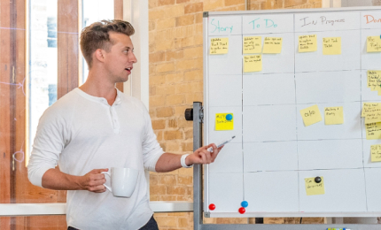

<section class="video-page">

  <div class="breadcrumbs wrapper">
    <ul class="breadcrumbs__list">
        <li class="breadcrumbs__item">
            <a class="breadcrumbs__link" href="./main.html">Главная</a>
        </li>
        <li class="breadcrumbs__item">
            <a class="breadcrumbs__link" href="./blog.html">Инсайты</a>
        </li>
    </ul>
  </div>

  <div class="video-page__top-container wrapper">
    <div class="video-page__title-wrapper">
      <h1 class="video-page__title">Microsoft Azure для малого и среднего бизнеса: как использовать облако на ваших условиях</h1>
      <span class="video-page__type">Вебинар</span>
      <span class="video-page__date">30.08.2021</span>
    </div>

    {{> links}}
  </div>

  <div class="intro__pop-up modal">
    <div class="intro__pop-up_wrapper">
      <div class="form-modal__close"></div>
      <!-- <button class="form-modal__play">
        <svg><use href="#play"></use></svg>
      </button> -->
      <div class="intro__pop-up_video-wrap">
        <video class="intro__pop-up_video" preload="auto" loop controls playsinline>
          <source src="./assets/video/video.mp4" type="video/mp4">
        </video>
      </div>
    </div>
  </div>

  <div class="video-page__main-desc text-wrapper">
    <div class="video-page__desc-cont">
      <h2 class="video-page__desc-title">Критерии выбора новой системы</h2>
  
      <p>Критерии - обеспечить скорость, технологичность и безопасность без ущерба для производительности и качества бизнес-процессов банка. Сотрудничество основано на модели SOC как услуги, которая позволяет ВОО Банку избежать затрат на дорогостоящее оборудование и высококвалифицированный персонал, обеспечивая при этом всестороннюю профессиональную защиту.</p>
  
      <div>Реализация всего проекта, от момента первоначального обсуждения до сдачи под ключ, которая заняла у проектной команды Softline 14 дней, включала три основных этапа: подготовка, внедрение решения и разработка эксплуатационной документации. Сложность подхода к решению поставленных задач является одним из ключевых показателей качества работ, выполняемых Softline</div>
  
      <p>После подготовительного этапа специалисты Softline предложили проект по реализации<a href="#" class="red">Диспетчер проверки подлинности SafeNet</a> программный пакет от Aladdin R.D</p>
    </div>

    {{> tag-wrapper}}
  </div>

  <div class="wrapper events">
    <div class="section-top align-bottom">
        <div class="section-top__title">Больше видео</div>
        <a class="link-red" href="#">
            <svg viewBox="0 0 32 32" fill="none" xmlns="http://www.w3.org/2000/svg">
                <rect width="32" height="32" rx="16" fill="#A50F2D"/>
                <path d="M21.8857 16.4L15.6954 22.8M21.8857 16.4L10 16.3997M21.8857 16.4L15.6954 10" stroke="white" stroke-width="1.5"/>
            </svg>
            <span>Смотреть все</span>
        </a>
    </div>   
    
    <div class="news__slider">
        <div class="news__container swiper-container">
            <div class="swiper-wrapper">

                <div class="swiper-slide news-slide">
                  <a href="#" class="events__item">
                    <span class="events__img">
                      
                    </span>
                    <span class="events__name">Бизнес-решения</span>
                    <span class="events__title">Microsoft Azure для малого и среднего бизнеса: как использовать облако на ваших условиях</span>
                  </a>
                </div>

                <div class="swiper-slide news-slide">
                  <a href="#" class="events__item">
                    <span class="events__img">
                      
                    </span>
                    <span class="events__name">Облака</span>
                    <span class="events__title">Платформа сетевой виртуализации VMware NSX</span>
                  </a>
                </div>
                
                <div class="swiper-slide news-slide">
                  <a href="#" class="events__item">
                    <span class="events__img">
                      
                    </span>
                    <span class="events__name">Кибербезопасность</span>
                    <span class="events__title">Введение в Docker и Kubernetes. Быстрое создание контейнерной инфраструктуры</span>
                  </a>
                </div>

                <div class="swiper-slide news-slide">
                  <a href="#" class="events__item">
                    <span class="events__img">
                      
                    </span>
                    <span class="events__name">Вебинар</span>
                    <span class="events__title">Microsoft Azure для малого и среднего бизнеса: как использовать облако на ваших условиях</span>
                  </a>
                </div>
            </div>
            <div class="swiper-button-prev"></div>
            <div class="swiper-button-next"></div>
        </div>
    </div>
</div>


</section>

{{> cookie-modal}}